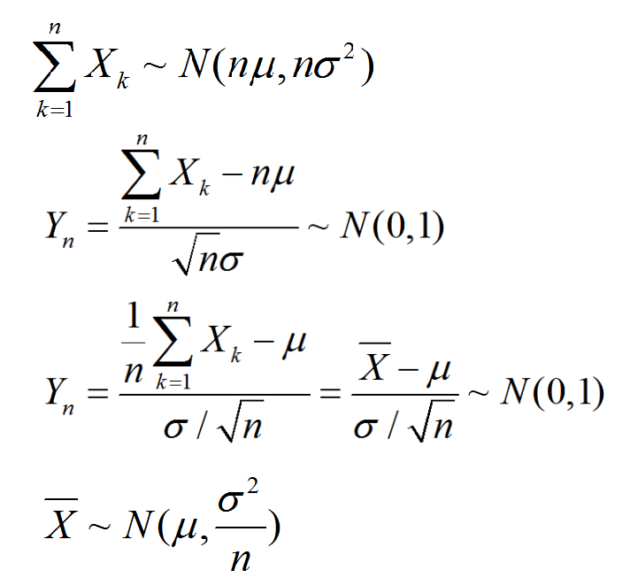

1 大数定律
1.1 弱大数定律 (辛钦大数定律)
设随机变量序列 $ X_{1} $, X2,$ \ldots $ 相互独立，服从同一分布，具有数学期望E(Xi)=μ,i=1,2,...，则对于任意正数E，有
n→∞limP{∣n1i=1∑nXi−μ∣<ε}=1
1.1.1 依概率收敛定义及性质
设Y1, Y2, …,Yn…是一个随机变量序列，a是一个常数。若对任意正数ε，有
n→∞limP{∣Yn−a∣<ε}=1
则称序列Y1,Y2,⋯Yn,⋯依概率收敛于a，记作YnPa.
1.1.2 定理1的另一种叙述
设随机变量序列X1,X2, … 相互独立，服从同一分布，具有数学期望E(Xi)=μ,i=1,2,… 则序列Xˉ=n1∑nXi依概率收敛于μ。即XˉPμ。
1.2 伯努利大数定律
设 nA 是n次独立重复试验中事件A发生的次数，p是事件A在每次试验中发生的概率，则对于任意正数ε> 0 ，有
n→∞limP{∣nnA−p∣<ε}=1或n→∞limP{∣nnA−p∣≥ε}=0
2 中心极限定理
2.1 中心极限定理产生的背景
实际中，许多随机变量是由大量的相互独立的随机因素的综合影响所形成的，而每一个个别因素在总的影响中所起的作用都是微小的。这种随机变量往往近似地服从正态分布。
2.2 定理1（独立同分布下的中心极限定理）
设随机变量X1,X2,⋯Xn,⋯相互独立，服从同一分布，且具有数据期望和方差：
E(Xk)=μ,D(Xk)=σ2,k=1,2,⋯
则随机变量之和∑k=1nXk的标准化变量为：
Yn=nσ∑k=1nXk−nμ
其分布函数F(x)对任意x满足：
n→∞limP{∣nnA−p∣<ε}=1或n→∞limP{∣nnA−p∣≥ε}=0
上述结论等价于：

2.3 定理3 棣莫佛－拉普拉斯（De Movire-Laplace定理）
设随机变量ηn(n=1,2,…)服从参数n,p(0<p<1)的二项分布，则对任意x，有
n→∞limP{np(1−p)ηn−np≤x}=∫−∞x2π1e−2t2dt=Φ(x)
定理标命，当n很大时，0<p<1是一个定值时，二项变量ηn的分布近似正态分布N(np,np(1−p))，即：
ηn∼ 近似地 N(np,np(1−p))
例1 一加法器同时收到20个噪声电压Vk(k=1,2,…20),设它们是相互独立的随机变量, 且都在区间(0,10)上服从均匀分布. 记V=∑k=1nVk, 求P{V>105}的近似值